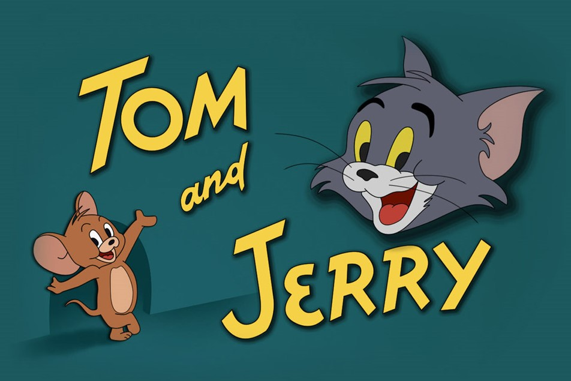

About Tom and Jerry
Tom and Jerry first premiered in 1940, featuring a cat named Tom chasing a mouse named Jerry through their home, the streets, and around the world! These cases often involved Tom getting into awkward situations and being putting immense pain while Jerry toyed with him and got the last laugh.
Of course, Tom and Jerry were never alone and a host of other hilarious characters helped or hindered their adventures, including Nibbles Mouse , Spike Bulldog , Butch Cat, and more!